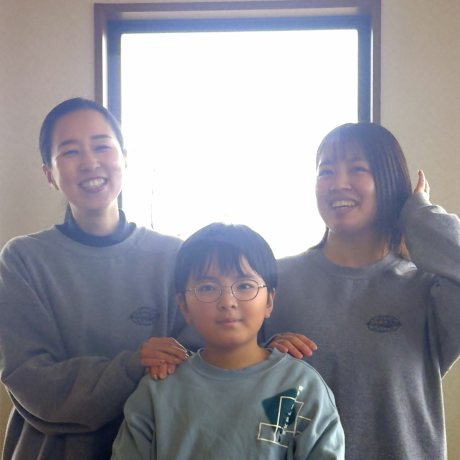

主体性療育から、IT療育へ。
経済的自立から逆算した、10年間の確かなロードマップ。
Reality
「自立」という、シビアな現実。
特性を持つこどもたちが大人になった時、直面する社会は決して甘くありません。強い特性を持つ成人は、そうでない成人と比べ収入に大きな格差が生じるというデータがあります。
「この子は将来、自分の力で生きていけるのか」——既存の療育では、その根本的な不安を拭い去ることが難しいのが現実です。BLUE MOUSEは、その問いと正面から向き合うところから始まりました。
強い特性を持つ成人の収入格差
特性のある成人とそうでない成人の間には、統計上およそ50%もの収入差が生じるとされています。この現実と向き合うことが、BLUE MOUSEの出発点です。
Approach
凸凹と向き合いながら、「武器」を手にする。
こどもたちは日々、コミュニケーションや落ち着きのなさなど、自分の「苦手」と向き合っています。しかし、苦手をカバーして「みんなと同じ」に近づけたとしても、学習面の遅れという別の壁が立ちはだかることが少なくありません。
苦手をゼロにするための努力だけで、貴重な時間を費やすのではなく——その子が持つ「強み（特性）」を、社会で生き抜くための「武器」へと育てていく。AIが社会を激変させていく現代において、私たちが「経済的自立」から逆算して辿り着いた最も確かな道。それが小学生からのITスキルの獲得です。
Difference
専門的な「伴走者」の存在。
分からない時に、周囲が応じてくれるHELPを出せるか。自分のペースではなく、決められた時間に行動を切り替えられるか。強いこだわりを一旦横に置いて、求められたルールで課題に取り組めるか。
専門的な知識を持ったスタッフの伴走のもとで、こどもたちはIT課題を通して、特性への対処法や社会性を学びます。この「伴走者」の存在こそが、一般的なパソコン教室との明確な違いです。
操作スキルの習得が目的
タイピングや操作方法を教えることがメインで、その子の特性や社会性への支援は行われません。
ITを通じた自立支援
専門スタッフが伴走し、IT課題を通じて特性への対処法・社会性・自己調整力を同時に育てます。
見学・体験は無料です。まずはお気軽にお問い合わせください。